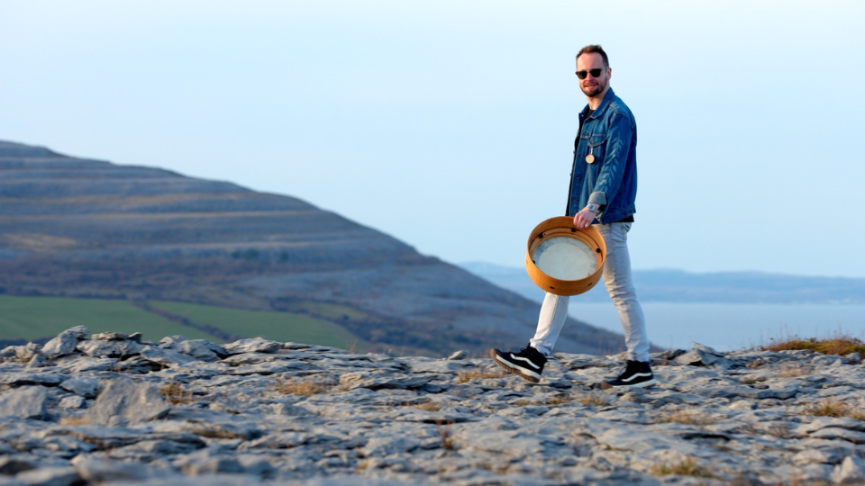
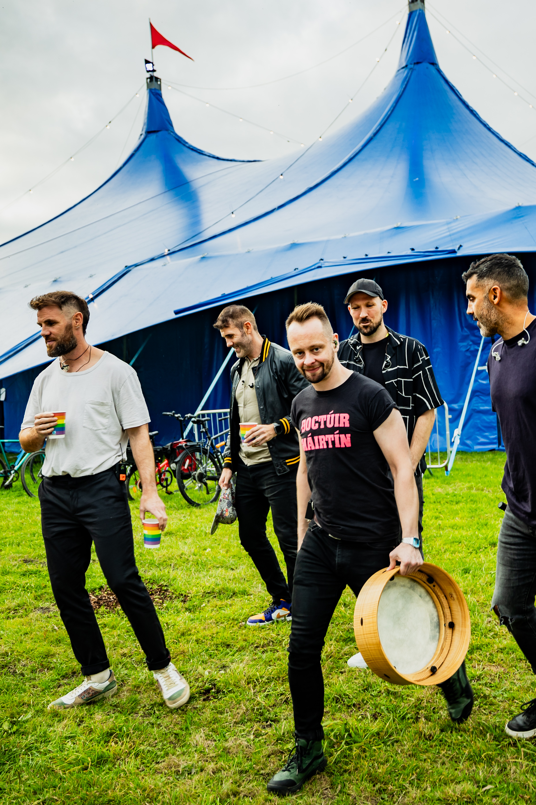
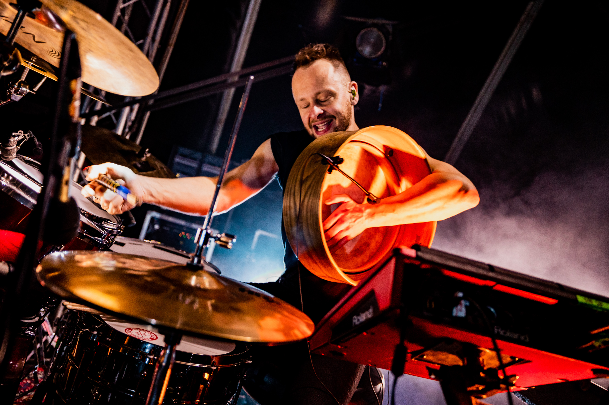

County Clare, Ireland • Percussionist & Educator
Learn the craft through structured online courses, live Zoom improver sessions, and studio-grade playalongs—or hire a dedicated percussionist for your next recording.
Self-Paced Online Course
A comprehensive, step-by-step online curriculum rooted in County Clare. Build your tone, groove, and musicality at your own pace with high-definition lessons and controlled-speed playalong material.




Live Online Coaching
Interactive live sessions for players ready to push their timing, phrasing, and groove. All sessions include full Zoom replays so you can join from any time zone.
Once a Month
A focused deep-dive workshop every month exploring a specific rhythm, tune type, or accompaniment technique.
Ongoing Weekly
Consistent weekly practice to build speed, repertoire, and confidence alongside a community of dedicated players.
Structured Cohort
A capped-size, 6-week guided course with a clear syllabus and direct feedback to transform your playing.
High-resolution bodhrán sample packs for producers and controlled-speed playalong tracks for students are currently in the studio. Sign up to the newsletter for first access when the Samply library launches.

For Artists, Producers & Composers
Need authentic, mix-ready bodhrán or drum kit percussion tracks for your album, film score, or commercial project?
Recorded from my studio in County Clare with multi-mic options and fast turnaround—delivered as clean, time-aligned WAV stems ready to drop straight into your DAW.
Inquire About a SessionSend your rough mix, tempo, and brief to get started.